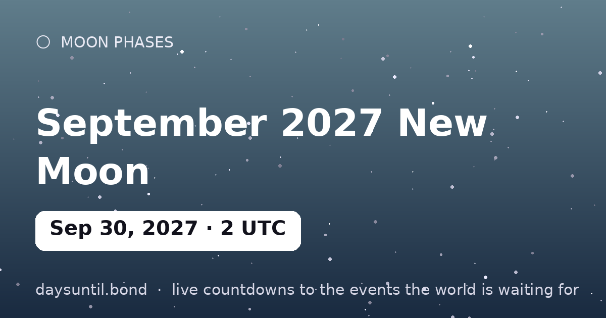

How Many Days Until September 2027 New Moon?
September 2027 New Moon falls on Thursday, September 30, 2027.
As of October 24, 2026: 341 days to go — 48 weeks and 5 days, 244 weekdays (97 weekend days), about 8,184 hours.

Quick facts
| Exact (UTC) | September 30, 2027 · 02:37 |
|---|---|
| Zodiac position | 6°43' Libra |
| Moon phase | New Moon (0% illumination) |
| Best viewing | Moonless night — ideal for stars, meteors and the Milky Way |
About September 2027 New Moon
The September 2027 new moon falls at 02:37 UTC on September 30, 2027, at 6°43' Libra. The Moon sits between Earth and Sun, so its dark side faces us: no Moon visible for about a day on either side.
A new moon in Libra is the traditional planting moment of the month — the sky's blank page. Anything begun in the days around it shares the sign's flavor, and the intentions you set now come to full light at the Libra full moon six months later.
Your September 2027 New Moon countdown milestones
It is easier to plan against fixed points than against a number that moves. These are the dates on which the countdown to September 2027 New Moon passes each marker between now and the day itself — the last one falls on Wednesday 29 September, when there will be 1 day left.
| Milestone | Day | Date | Remaining |
|---|---|---|---|
| 200 days | Sunday | 14 March 2027 | 200 days to go |
| 100 days | Tuesday | 22 June 2027 | 100 days to go |
| 50 days | Wednesday | 11 August 2027 | 50 days to go |
| 30 days | Tuesday | 31 August 2027 | 30 days to go |
| 14 days | Thursday | 16 September 2027 | 14 days to go |
| 7 days | Thursday | 23 September 2027 | 7 days to go |
| 3 days | Monday | 27 September 2027 | 3 days to go |
| 1 days | Wednesday | 29 September 2027 | 1 day to go |
How the remaining time breaks down
341 days is the headline, but it is rarely the number that helps. 244 of those are weekdays and 97 fall on a weekend, which is the split that matters if you are planning around work. It is 48 weeks and 5 days, or roughly 11.2 months, or about 8,184 hours.
| Unit | Until September 2027 New Moon |
|---|---|
| Days | 341 |
| Weeks | 48 weeks and 5 days |
| Months (approx) | 11.2 |
| Weekdays | 244 |
| Weekend days | 97 |
| Hours | 8,184 |
| Sleeps | 341 |
Working days are Monday to Friday and do not subtract public holidays, which vary by country and employer — the full month-by-month split is on our weekday page for September 2027 New Moon.